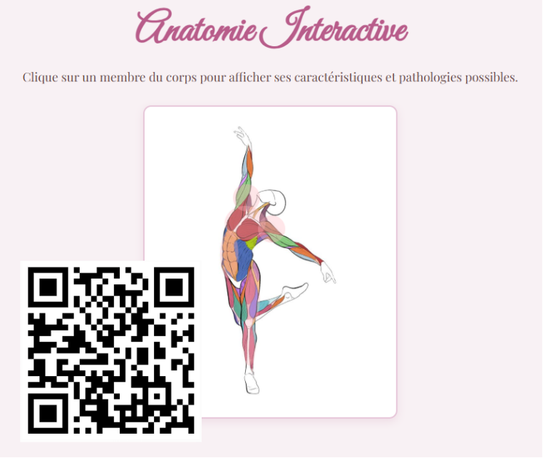

2025-2026
Master 1 Santé Publique Informatique Biomédicale
- Sorbonne Paris Nord
2024-2025
Licence 3 Biologie Cellulaire et Physiologie
- Sorbonne Paris Nord
2021-2024
Licence Sciences Biologiques Appliquées et Santé
- Faculté des Sciences et Techniques Maroc
Anatomie Interactive : fonctions et pathologies
+ Projet web qui explore les membres du corps humain.
+ Chaque zone anatomique est cliquable et affiche une fiche d'information.
+ Les fiches présentent la fonction et les pathologies associées.
+ Réalisé en HTML, CSS et JavaScript avec des bulles d'information dynamiques.
+ Objectif : Rendre l'apprentissage de l'anatomie plus interactif et accessible.
➜ Voir le projet en ligne

2024 : Stage en laboratoire (analyse, biologie, techniques expérimentales)
2025 : Projet universitaire M1 santé publique
2025-en cours : Equipière Polyvalente au Quick
2025-en cours : Ambassadrice du Service Voie de l'Orientation au sein de l'université Sorbonne Paris Nord
2026-2025 Master 1 Santé Publique Informatique Biomédicale
-Sorbonne Paris Nord
2025-2024 Licence Biologie Cellulaire et Physiologie
-Sorbonne Paris Nord
2023-2024Licence Sciences Biologiques Appliquées et Santé
-Faculté des Sciences et Techniques (Maroc)
sarahbouallou64@gmail.com
07 77 66 65 50
@sarahbouallou